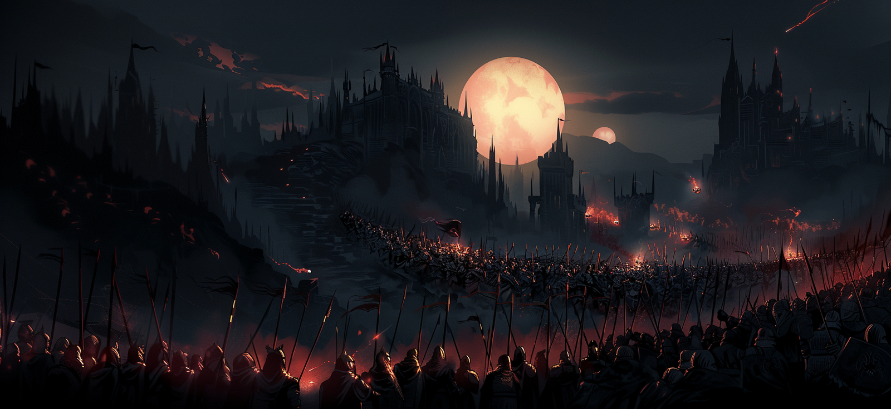

| Introduction |
|---|
|

Fae'Gir...In the yellowed pages of forgotten tomes, the legend of Fae'Gir is told, a name that slips like a whisper through the cracks of time. Since the moment words began to dance in books, this name has persisted, a mysterious melody that resonates in the vast shelves of libraries guarding the chronicles of the realms. But from what hidden corner of creation did this set of intertwined letters spring forth? An enigma that defies the attempts of scholars to unravel its origin. Thus was born the popular belief: Fae'Gir, the god who descended for the first time upon the Empire, sowing the magical seed that sprouted into everything that followed. However, the light that Fae'Gir supposedly bestowed upon the world was a glow tinged with relativity. In that plane, night rose with equal fervor to the day, and nocturnal creatures wove their shadows among the destinies of humans. In that vast macabre stage, the duality of existence unfolded like an intricate tapestry of nightmares: light and darkness, life and death, order and chaos, in an eternal dance inscribed on bloodstained pages since the dawn of time. Now we are left with only a godless world ruled by greed, betrayals, and adversities, where every plain is a cemetery of nameless corpses, where every forest is a tomb of trees threatening to engulf anyone who enters them, and where everyone must fight tooth and nail to find a place to fit in without dying in the attempt. |
| Factions |
|---|
Dark Zenith.
Zenith's Coat of Arms. In the deepest shadows of the map lies Zenith, a territory steeped in the darkest darkness. In this land, rituals intertwine with witchcraft in all its forms, from the mysteries of black magic to the sacrifices that stain the earth. The capital, Ebony Crown, shrouded in perpetual night woven by dark arts, becomes the refuge of all kinds of nocturnal creatures, such as vampires who give image to the bourgeoisie. Despite the apparent anarchy of these acts, society adheres to certain norms, although these only serve to sustain the corrupted heart of the kingdom. At this decadent peak, the aristocracy lives in opulence, while the lower sphere struggles in the shadow of misery, yet Zenith is the only place that offers total shelter to those blessed by magic, or who want to study its arts, as long as they do not allow the adversity of the night to overcome them. Authority in the empire had always been balanced in a delicate duo, with a representative of the common races, humans, elves, and others, and another of the nocturnal creatures, perpetuating their reign of shadows and secrets. However, recently, that balance has been disrupted. Where there were once two, now three reign, forming what is known as the Unholy Triad. A new and enigmatic member has joined their ranks, threatening to catapult the world into the same eternal night that envelops the Ebony Crown. Zenith's ultimate goal remains a magnet for devotees, drawing them like moths to the light... Or to the darkness: a world of magic, a dreamlike plane that welcomes each and every creature capable of facing adversity, regardless of their origin, without discriminating races, magics, and cultures, or the acts that have marked their path. Land of Dawns.
Lands' coat of arms. The Land of Dawns emerges as a bastion of resistance, a response to the darkness of Zenith. Born from a rebellion seeking to eradicate magic and everything associated with the dark kingdom, they turn to alchemy as a science that challenges and competes against arcane arts, in addition to having the blessing of Light, which clerics, knights, and paladins wield as a radiant weapon that purges evil. Gideon, the illustrious leader of this monarchy, leads the fight against magic, adopting a stance akin to a relentless inquisition. His vision is one of prosperity free from the yoke of nocturnal creatures, and the corruption, chaos, and destruction that, in his eyes, magic breeds in the hearts of people, using light as a guide and rejecting any shadow that dares to tarnish his kingdom. After migrating west as a united nation, and after fighting countless wars until they could settle, Gideon, with the help of The Golden Order, his most faithful and noble knights, and, of course, the fervent followers seeking to escape the yoke of Zenith, founded The Elysian City, capital of the Lands, at the farthest point from the Ebony Crown. This enclave stands as a beacon of hope in the Lands of Dawn, defying the darkness that threatened to plunge the world into eternal night. However, there is no room for magic in the idyllic world that Gideon and his followers seek to create. Through crusades and his inquisition, the only way out for those 'cursed' by witchery is death, or to undergo an alchemical ritual that would deprive them of all their magic for the rest of their lives. But any glimmer of 'good' in the lands of Fae'Gir is ephemeral: Gideon, the revered monarch, fell victim to a cruel ambush, a betrayal that whispered the shadow of the Triad. The king's wound, they say, bled not only blood, but darkness itself. Since that fateful day, the imposing figure of the king withdrew to the fortress of the Radiant Bastion, which stands as a guardian over the Elysian City. Months have passed since that bleak event, and although rumors suggest that Gideon still rules from the heights of the capital's towers, the absence of his radiant presence not only fuels gossip, but also reopens the door to the persistent threat of an eternal night looming on the horizon. In this murky scenario, uncertainty weaves its threads in the gloom, and the shadow of conspiracy looms like a cloak over the Land of Dawns. Northern Marches.
Marches' coat of arms. The vast expanses of the Northern Marches, evoking the cold majesty of frozen epics, present themselves as desolate lands, inhospitable both in terms of climate and the nature of their inhabitants. In this relentless corner, where the land freezes in perpetual twilight, life has woven a history of adversity that has forged a people of resistance, endowed with a fortitude and ruggedness that surpass the bounds of the ordinary. The daily tribulations in these borderlands have chiseled the population of the Northern Marches, imbuing them with a hardness and tenacity that can only be forged in the crucible of constant adversity. They face the plagues that scourge their homes and combat the aberrant creatures of the north, such as ghouls and dragons, that emerge from the icy shadows to challenge existence itself. In their steadfast rejection of both the sinister influence of Zenith and the luminous resistance of the Land of Dawns, the Northern Marches stand as an impenetrable fortress. This rejection is not merely an act of defiance but a testimony to their rooted independence and unwavering determination to carve their own destiny amid the adversities the region presents. Home in the Northern Marches is not merely a geographic location; it is a deep connection to the frozen land they have learned to call home. This attachment intertwines with an unbreakable devotion to their own gods, deities who have been silent witnesses to the battles fought in the frigid twilight. Thus, with a determination emanating from the roots of their land, the Northern Marches remain as an independent and resilient realm, unyielding in their resistance against the forces that threaten to engulf them. Acting as a bastion between the lands beyond the north and the rest of the empire, the Northern Marches stand as steadfast guardians, facing the challenges coming from the dark horizon and protecting the empire's lands from the shadows lying beyond its borders. For this very reason, because of the toughness of its people and their important role on the map, neither the Lands nor the Zenith usually venture into their territory for warlike purposes. Free Kingdoms.
Symbol that represents the Free Kingdoms. In the Free Realms, vast expanses where autonomy is the norm, shelters rise that defy the bindings of the three main alliances. They are cities or influential groups that have managed not to affiliate themselves with or follow the rules of any of the three main Alliances. For example, Black Bay stands as a bold bastion for sea dogs, those who refuse to bow to imposed laws. In this daring corner, turbulent waters welcome those who proudly wave the pirate flag without restrictions. Here, the pirate hierarchy establishes its own order, defying conventions and charting its destiny on the treacherous waves of the ocean. Autonomy reigns in this refuge, where loyalty is earned with cunning and authority is asserted with bravery, far from the influences of dominant alliances. In contrast, the Woodlands, also part of the Free Realms, harbor those who seek communion with nature and reject any subjugation to established alliances. Here, among the whispers of ancient trees, druids find their home, maintaining a sacred balance with the land and resisting the impositions of the realms. In the Woodlands, autonomy manifests in harmony with nature. Decisions are guided by the whisper of leaves, and forest creatures are allies in the struggle against any attempt at conquest. Druids, as guardians of these enchanted forests, intertwine their destiny with the eternal flow of life, defending the independence of their domains. These independent places, whether Black Bay with its unrestricted pirate flag waving or the Woodlands with its druids resisting in the twilight of ancient trees, forge their own narratives in the fabric of time. By not affiliating with any of the three main alliances, they stand as witnesses and protagonists of the freedom that prevails in the Free Realms, tracing their destiny in the freedom of treacherous waves or in the eternal harmony of nature. |